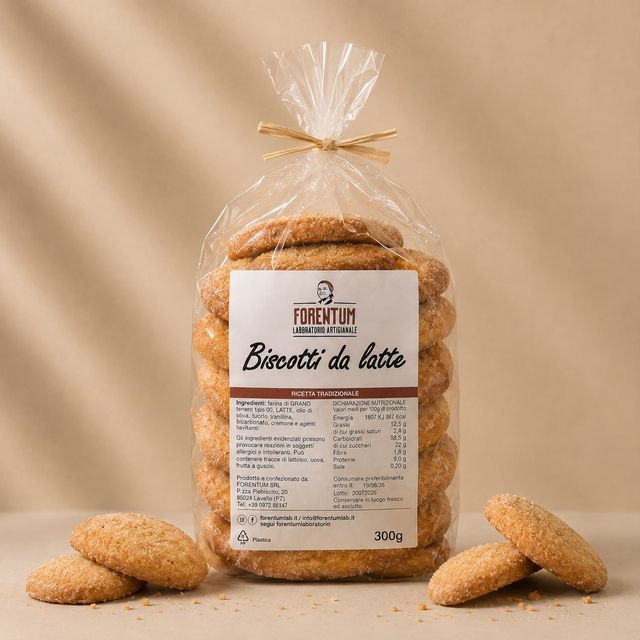
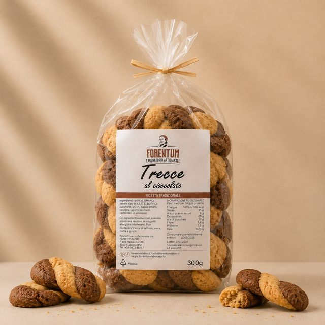
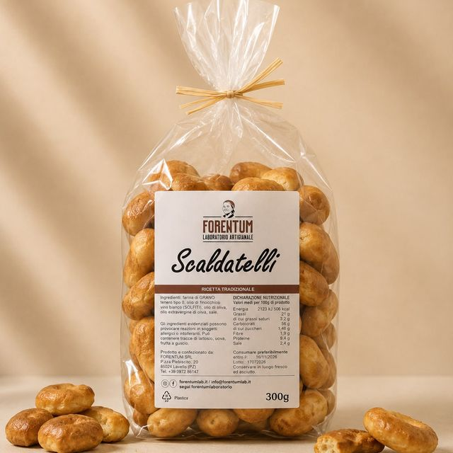
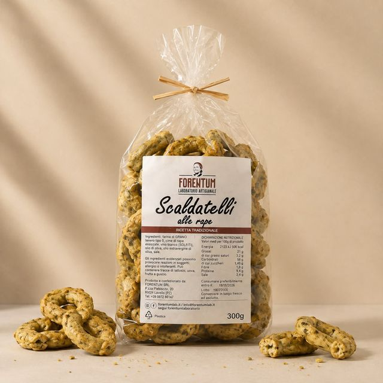
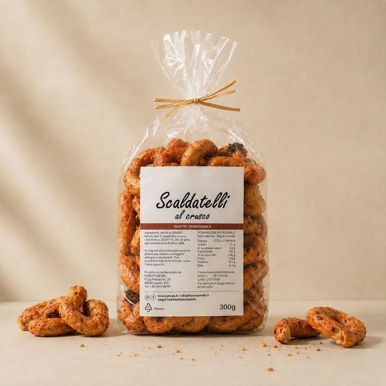
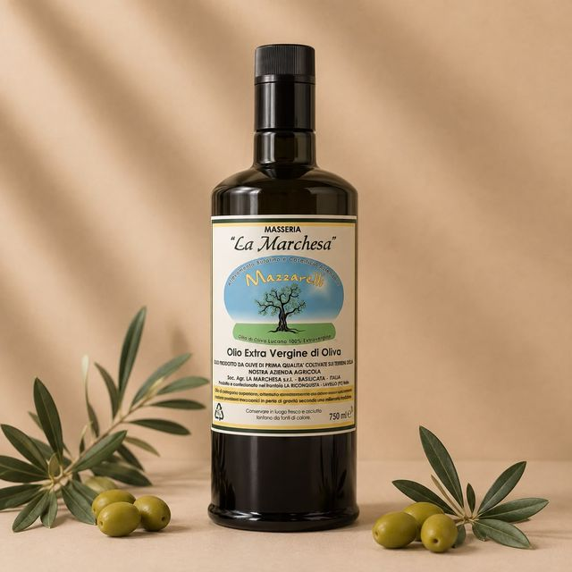
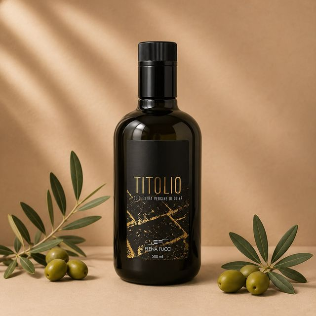

Forentum — Laboratorio Artigianale

Forentum Lab
Biscotti da latte
Biscotti artigianali
Forentum Lab · Biscotti rustici da inzuppo, impastati con latte e uova. Perfetti per la colazione o la merenda. 300 g
300 g
€4,50

Forentum Lab
Trecce al cioccolato
Biscotti artigianali
Forentum Lab · Biscotti di pasta frolla intrecciati a mano, in doppio impasto: vaniglia e cacao amaro. 300 g
300 g
€5,50

Forentum Lab
Scaldatelli Classici
Taralli artigianali
Forentum Lab · Taralli lucani intrecciati a mano, con olio di finocchio e vino bianco. Croccanti, ideali con salumi e formaggi o come aperitivo. 300 g
300 g
€5,00

Forentum Lab
Scaldatelli alle rape
Taralli artigianali
Forentum Lab · Taralli impastati con cime di rapa essiccate, dal gusto vegetale e deciso. Un classico della tradizione contadina lucana. 300 g
300 g
€5,50

Forentum Lab
Scaldatelli al crusco
Taralli artigianali
Forentum Lab · Taralli con peperone crusco di Senise IGP, dolce e croccante, essiccato al sole. Il sapore più riconoscibile della Basilicata. 300 g
300 g
€5,50

Masseria La Marchesa
Olio Extra Vergine di Oliva
Olio Extra Vergine di Oliva
Masseria La Marchesa · Extravergine 100% lucano, da olive raccolte e frante in azienda. Fruttato medio, ottimo a crudo. 750 ml
750 ml
€19,00

Elena Fucci
Titolio
Olio Extra Vergine di Oliva
Elena Fucci · Extravergine di alta gamma dell'azienda vitivinicola del Vulture. Elegante e persistente, da riservare ai piatti importanti. 500 ml
500 ml
€15,00